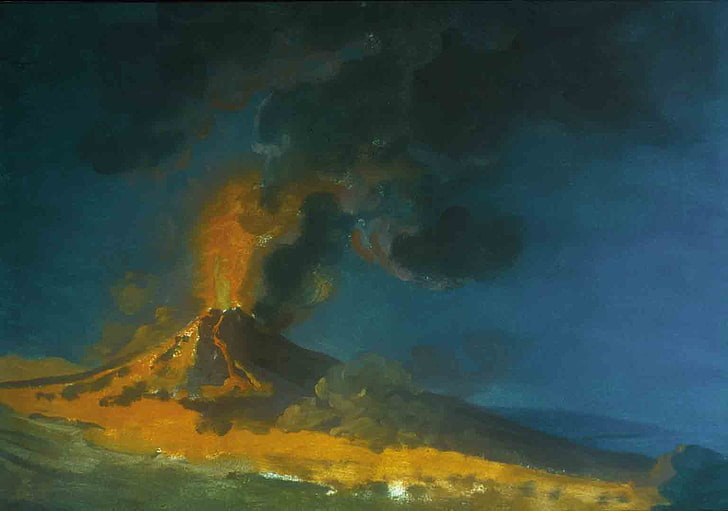

A erupção do Vesúvio em 79 d.C. foi uma das mais conhecidas e catastróficas erupções vulcânicas de todos os tempos.[1] As cercanias romanas de Pompeia, Herculano, Estábia e Oplontis foram afetadas, com Pompeia e Herculano sendo completamente destruídas. O Vesúvio espalhou uma nuvem mortal de rochas, cinzas e fumaça a uma altura de mais de 30 quilômetros, cuspindo lava e púmice a uma proporção de 1,5 milhão de toneladas por segundo e liberando no total uma energia térmica centenas de milhares de vezes maior do que a do bombardeamento de Hiroshima.[2] Estima-se que 16 000 cidadãos de Pompeia e Herculano morreram devido ao fluxo piroclástico hidrotermal de temperaturas superiores a 700 °C.[3] Desde 1860, quando escavações sistemáticas passaram a ser realizadas em Pompeia, os arqueólogos descobriram nos limites da cidade as cascas petrificadas dos corpos decompostos de 1 044 vítimas.[4]
